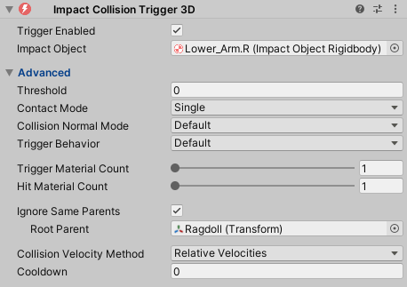
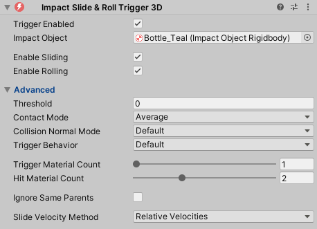

Impact Triggers
Impact Triggers are components that tell Impact Objects when to play effects and with what data. They are the origin that provides the data which is sent to the object’s Impact Material to ultimately play the effects defined on the material.
Common Trigger Properties
Included with Impact are a set of Impact Triggers that utilize Unity’s collision and trigger messages to trigger physics effects. These triggers come in both 3D and 2D components.
Most Impact Triggers have the following common properties:
- Trigger Enabled – Whether or not the trigger will process collision messages. You should use this if you want to disable the trigger, since the normal Behaviour.enabled property will still recieve collision messages if the component is disabled.
- Impact Object – The Impact Object collision data will be sent to. If empty, it will attempt to find an Impact Object on the collider that was hit or one of its parents.
- Threshold – An optional threshold that the collision velocity provided by the collision message must be greater than. This will cut off processing early, increasing performance.
- Contact Mode – How the trigger will handle collision contacts.
- Single – Use only the first contact of the collision. This is the cheapest method.
- Average – Average all contact points together. This is slightly more expensive but results in more accurate positioning of the effect when multiple contact points are present.
- Collision Normal Mode – Behavior for the collision normal, which determines how effects are rotated.
- Default – Use the default collision normal that points away from the surface of the object being hit.
- Inverted – Invert the collision normal so that it points into the surface of the object being hit.
- Trigger Behavior – How the trigger handles assignment of the "Trigger" and "Hit" objects for effects. Note that both options can be active at the same time.
- Default – The object this trigger component is attached to will be the "Trigger" object responsible for playing effects.
- Inverted – Objects will be swapped, so that the object that was collided with will be the "Trigger" object responsible for playing effects.
- Ignore Same Parents – If enabled, this trigger will ignore collisions with objects that have the same parent.
This can be useful for things like ragdolls if you don't want the limbs to produce collision effects with each other.
- Root Parent – If set, collisions will be ignored if both objects have the given object as a parent (at any level, not just as an immediate parent). If not set, the topmost root parent of the objects will be compared.
Material Count
The Material Count properties allow collisions to retrieve multiple materials from the collision contact point. This means that effects for multiple materials can be played at the same time, allowing for blending between effects. Having a Material Count greater than 1 is primarily useful when colliding with objects with blended textures like terrains.
- Trigger Material Count – The number of materials that should be retrieved from this trigger's Impact Object.
- Hit Material Count – The number of materials that should be retrieved from the Impact Object that was hit.
Increasing the Material Count increases the Material Capacity used by the trigger, so make sure the Material Capacity on your Impact CFX Manager is configured accordingly.
Impact Collision Trigger
The Impact Collision Trigger is used to play effects for single collisions using the OnCollisionEnter message.
In addition to the common trigger properties, the Collision Trigger has the following extra properties:
- Collision Velocity Method – How to calculate the collision velocity.
- Relative Velocities – Calculate the difference in velocities of the 2 objects at the contact point. This is the most accurate method.
- Change In Velocity – Measure the difference in velocity from before and after the collision.
- Collision Message – Use the Collision Velocity provided by the collision message. This is the cheapest method, but is less accurate, especially when objects have a significant angular velocity.
- Cooldown – An optional cooldown between collision triggers, in seconds.
Impact Slide and Roll Trigger
The Impact Slide and Roll Trigger is used to play effects when objects slide and roll against each other. This trigger uses the OnCollisionStay message.
In addition to the common trigger properties, the Slide and Roll Trigger has the following extra properties:
- Enable Sliding – Whether or not to trigger sliding effects.
- Enable Rolling – Whether or not to trigger rolling effects.
- Slide Velocity Method – How to calculate the sliding and rolling velocity.
- Relative Velocities – Calculate the difference in velocities of the 2 objects at the contact point. This is the most accurate method.
- Collision Message – Use the Collision Velocity provided by the collision message. This is the cheapest method, but is less accurate, especially when objects have a significant angular velocity.
Impact Speculative Collision Trigger
The Impact Speculative Collision Trigger is a special trigger that acts similarly to the normal Impact Collision Trigger, but attempts to handle scenarios that may not register due to the Impact Collision Trigger's use of OnCollisionEnter. For example:
- A large, long object that falls over, but stays in contact with the ground the entire time and so does not trigger an OnCollisionEnter message when it hits the ground.
- Collisions against a single large non-convex mesh collider, where the floor and walls are part of the same mesh collider. If an object were to slide along the floor and hit a wall in this case, OnCollisionEnter would not be triggered.
In addition to the properties from the Impact Collision Trigger, the Speculative Collision Trigger has the following extra properties:
- Max Collisions Per Frame – The maximum number of collisions that can be generated in a single frame.
- Contact Point Comparison – The threshold to use when comparing contact points. If the square distance of the 2 contact points is less than this value, those 2 contact points are considered the same. A lower value will typically result in more contact points, while a higher value will result in fewer.
- Contact Point Lifetime – How many Fixed Update frames a contact point should be alive for before it is removed from the list of active contacts. Increasing this value can reduce the likelyhood of effects happening in quick succession for the same contact point.
This trigger should only be used if absolutely necessary, as it requires more processing, is not always predictable, and may produce an over-abundance of effects. Generally speaking the normal Collision Trigger is much more predictable.
Before using this trigger, it may be a good idea to examine your colliders to see if you can split single large colliders into multiple smaller colliders, since OnCollisionEnter will be called when different colliders of the same rigidbody are collided with.
Impact Particle System Collision Trigger
The Impact Particle System Collision Trigger is a special trigger for dealing with Particle System collisions.
In addition to some of the properties from the Impact Collision Trigger, the Particle System Collision Trigger has the following extra properties:
- Is Particle System – This determines how the trigger behaves.
- When Checked – The trigger will trigger effects when the particles of the assigned Particle System collide with other objects.
- When Unchecked – The trigger will recieve collision messages when particles collide with this object.
For the Particle System Collision Trigger to recieve collision messages, Collision must be enabled on the Particle System and Send Collision Messages must be enabled.
Impact Simple Collision Trigger
The Impact Simple Collision Trigger is similar to the normal Impact Collision Trigger, but it does not receive any collision data (such as velocity, contact point, or even the object that was collided with).
You should only use this in cases where you do not need detailed collision data and you want to remove the overhead of generating collision data for the collision message.
Impact On Trigger Enter
Impact On Trigger Enter is a trigger that can be used for "Trigger" type colliders.
This trigger uses the OnTriggerEnter message to trigger effects. It behaves similarly to the Impact Collision Trigger. OnTriggerEnter only provides the collider that intersected with the trigger, and so does not have detailed contact point and velocity information.
Impact On Trigger Stay
Impact On Trigger Stay is a trigger that can be used for "Trigger" type colliders.
This trigger uses the OnTriggerStay message to trigger effects. It behaves similarly to the Impact Slide and Roll Trigger. OnTriggerStay only provides the collider that intersected with the trigger, and so does not have detailed contact point and velocity information.